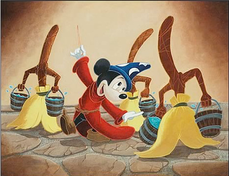
* 1.3 billion active websites (Source)
* Mayo Clinic enters 298 million patient records per year (Source)
* 500 million Tweets per day (Source)
* 294 billion emails sent daily (Source)
… and that’s just the digital stuff
Part 1: Counting Words for Fun and Profit
Part 2: Natural Language Processing is really useful
Part 3: Natural Language Processing is really hard
“… by using these existing standards, we hope to be able to leverage new technologies during processing.”
Was Will really talking like a corporate drone when he used “leverage” as a verb, or do lots of people do that outside the boardroom?
For that matter, how is “leverage” usually used?
Humans are inefficient and expensive.


 ## The Solution
## The Solution
~2,000,000 words of English fiction, books, humor, textbooks, reporting, and gov’t docs
Transcripts of 120 phone conversations (18.3 hours of speech)
2430 conversations (~3,000,000 words of text) from phone calls
~1,243,526 words transcribed from various broadcast news sources
96,106 email messages (~13,000,000 words) from the Enron Corporate Email Servers
All the text from every book in the “Google Books” service
The entire internet. At your fingertips
Thousands of hours of recorded child and child- directed speech
A large corpus of syntactically marked data (showing the tree structure of sentences)
This corpus actually contains sound files, useful for speech geeks like myself
leverage?
leveraged?
leverages
leveraging
Get your geek on by logging into a corpus server
“Find any lines in which EITHER “leverages” OR “leveraging” occurs
egrep "leverages|leveraging" yourcorpus
Callhome Corpus: 0 Results
EnronSent Corpus: 61 results
By doing statistical analysis on your searches, you can measure whether the data really shows what you claim it does
And move beyond opinion
“Leverage was used as a verb 61 times in the Enron corpus, and none at all in the equally large callhome corpus.”
Counting word frequency is a very powerful tool!
An n-gram is a sequence of words from a sample of text or speech
1 word is a ‘unigram’, 2 is a ‘bigram’, 3 is a ‘trigram’…
Counting words is relatively inexpensive
“How often does word X occur alone in corpus Y?”
These can be very powerful with many corpora
What if we could search through history with a corpus search to see how words are used over time?
https://books.google.com/ngrams
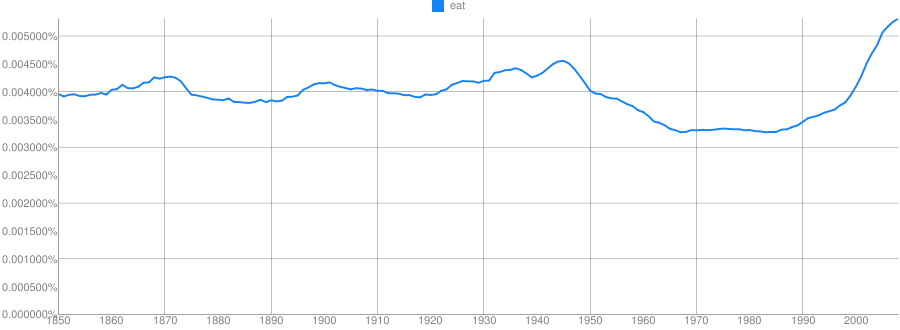
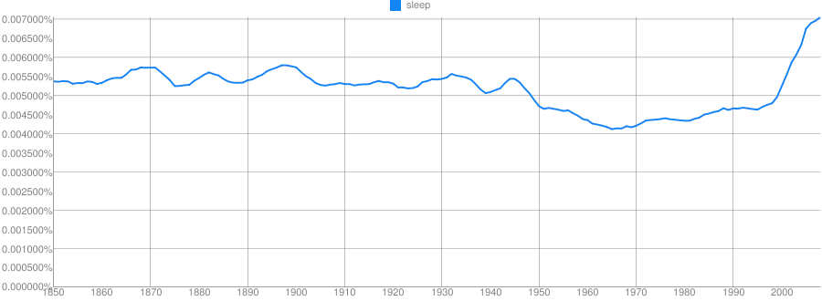
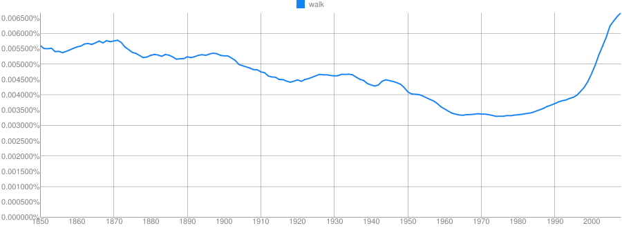
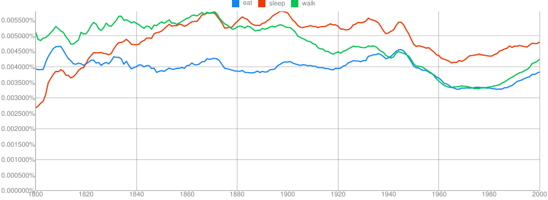
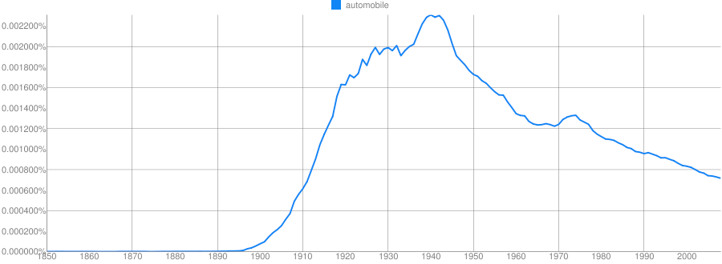
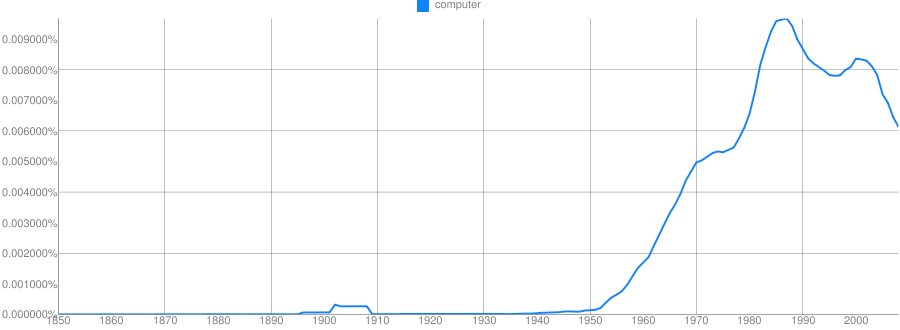

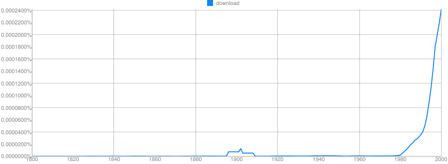
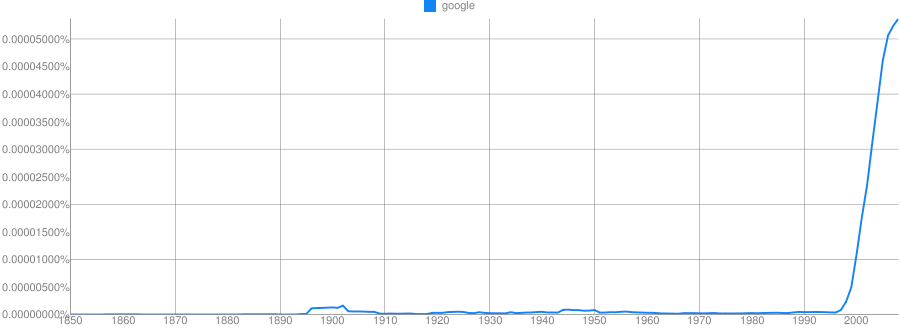
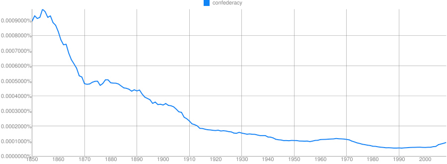
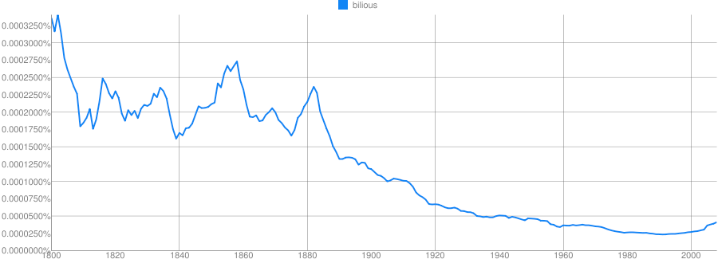
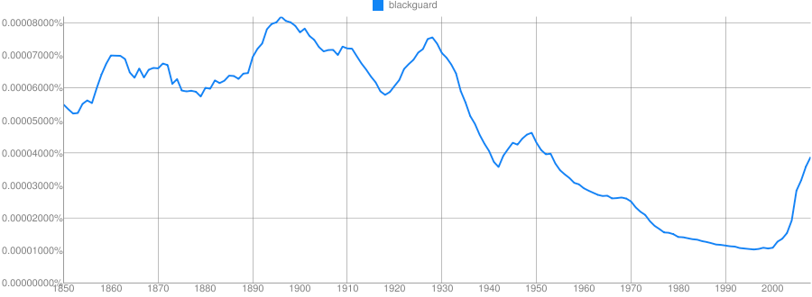
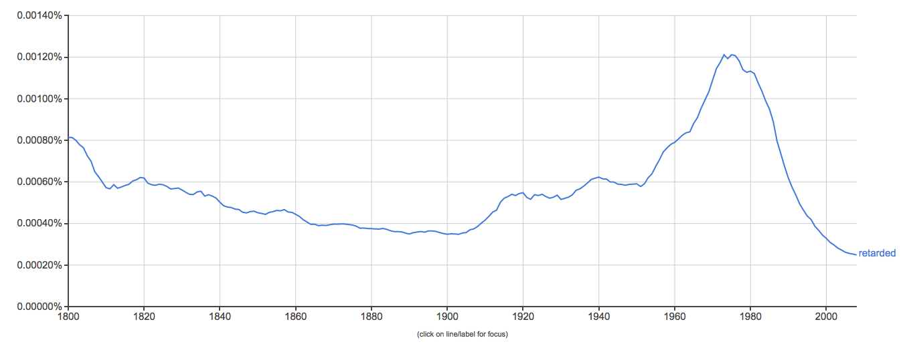
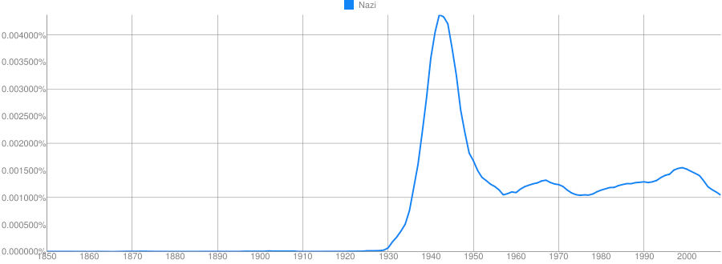
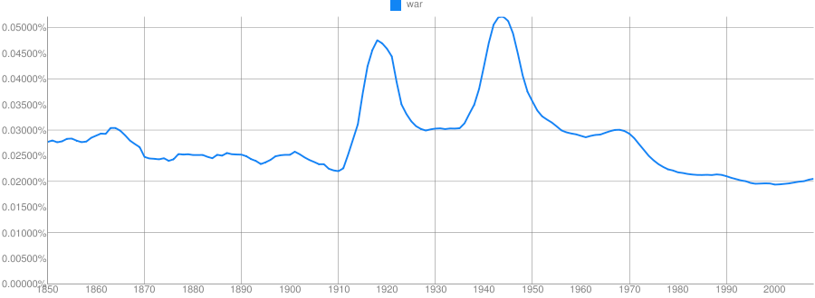
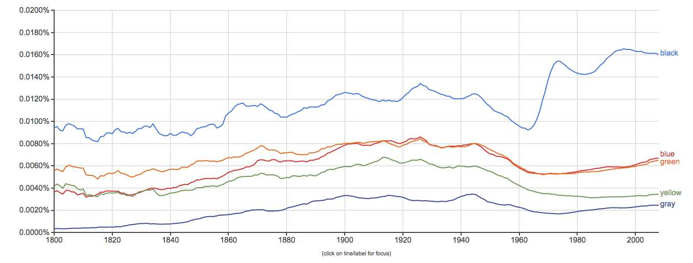
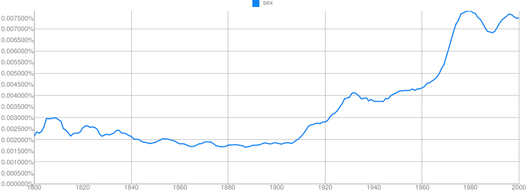
Clue: Type of person (belonging to a certain group or culture)
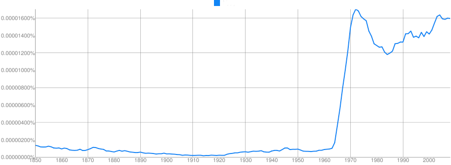
Clue: Country
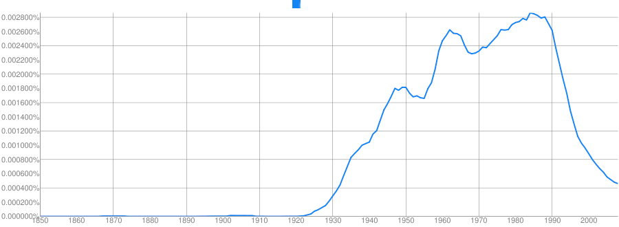
Clue: Home/Office Technology
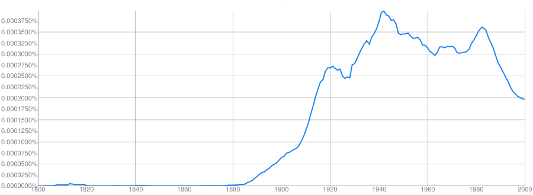
Clue: Military Technology
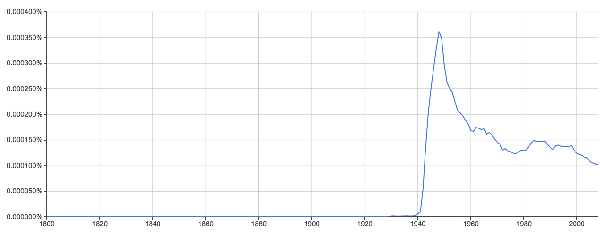
Clue: Transportation Technology
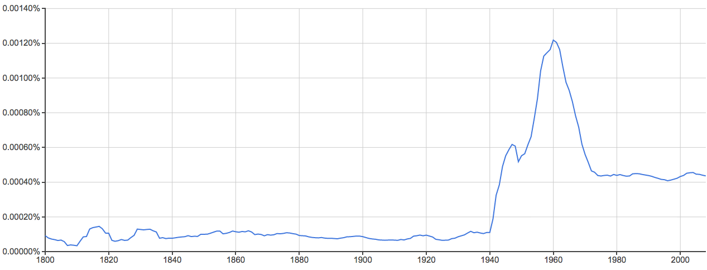
Clue: Food Product
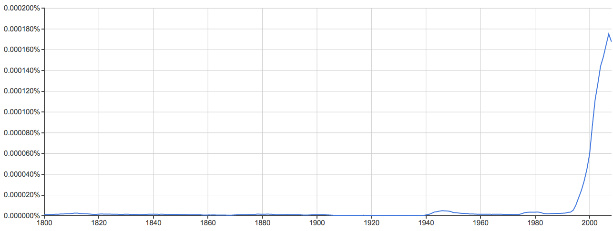
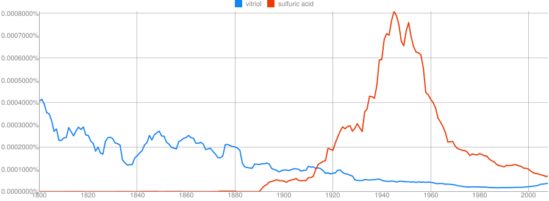
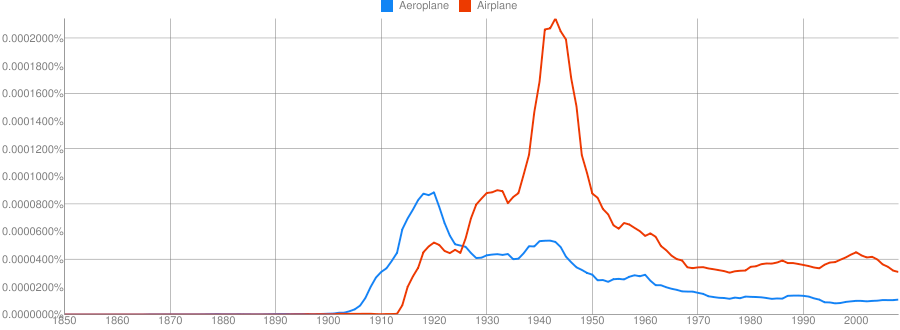
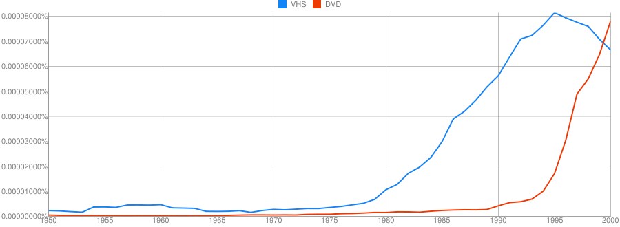
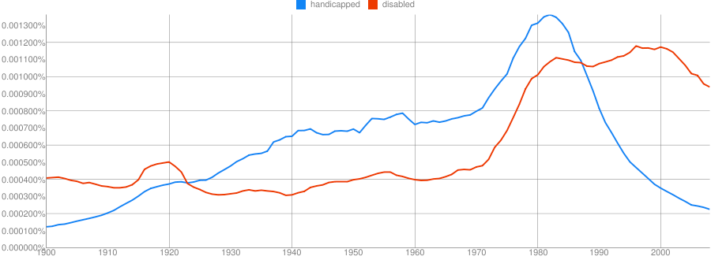
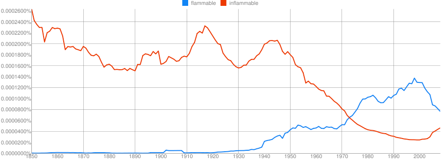
… and they can give us lots of good information
But bigrams and trigrams give much more interesting information about language
Counting how often word pairs occur together in a corpus gives us more than just counts
“What is the probability of word X following word Y?”
“You are” is more likely than “You is”
“Two princesses” is more likely than “Two princess”
“Would have” is more likely than “Would did”
“By and” is, by and large, followed by “large”
n-grams provide a very simple language model which we can do inference from
We all have probability models for language
“Let’s go _______”
“Take a ______”
“______ pizza”
“Chinese food” or “Chinese manufacturing” are often discussed
Probable pairings tell us something about how the world works
Provide some grammatical information
Provide some real-world information
Inexpensive to generate
Typo detection
“I made a bog mistake”
“She got lost in a peat big”
Speech recognition
“I need a walk for exercise”
“I need a wok for stir fry”
Sentiment analysis
“How often is word X used to describe black athletes vs. white athletes?”
Words like “Aggressive”, “Angry”, “Unstoppable” and “Ferocious” are preferentially applied to black athletes
Work is ongoing
Teaching computers to “understand” human language
NLP often uses more sophisticated techniques and language models to describe corpora
Breaks sentences into individual words
Labels words with their grammatical functions
This turns sentences into syntactic representations for analysis.
~~(ROOT (S (NP (DT This)) (VP (VBZ turns) (NP (NNS sentences)) (PP
(IN into) (NP (NP (JJ syntactic) (NNS representations)) (PP (IN for) (NP
(NN analysis)))))) (. .)))~~
“John boldly threw the stick at the polar bear.”
“John boldly threw the stick at the polar bear. The beast cast it aside then enjoyed a snack.”
“Ask people why they’re calling, and connect them to the right department based on their answer.”
“Flag all tech support conversations where the customer mentions a competitor”
“Redirect all angry-sounding customers to higher-tier support workers” (Speech emotion detection)
“Are the two people in this skype call flirting, arguing, expressing love, or sadness? Target post-session ads accordingly.”
“I want to talk to… billing?” (Uncertainty analysis)
“Yeah, I really like going to Applebees.” (Spot-the-sarcasm)
“Watch Twitter and give me the locations of wildfires, floods, etc, and provide information about damage, shelters and resources in an easy-to-read format” (EPIC)
“Read every news article about the Ukrainian Revolution and present the information on a cohesive timeline, with sources labeled.” (RED)
“Collect all case-law involving reverse mortgages in the state of Florida in which the plaintiff’s children filed suit against the mortgage company”
“Examine these two written passages/books and tell me whether they were both written by the same person” (Authorship Attribution Analysis)
“Examine these negative reviews and tell me what demographic the authors likely represent based on the language used.”
“Are these critical forum posts all written by the same person?”
“Look for any information in the newswire which will predict a change in this company’s stock price, then buy or sell stock automatically.”
“Based on this person’s Facebook post history, how likely is he to click an ad for weight-loss pills?”
“Based on all the political posts and tweets in Saginaw compared to those in Ann Arbor, how likely is this senator to lose in a recall election?”
“How often, in this corpus of blogs, do people say nice or awful things about product X?”
“We’ve just leaked a picture of our next supercar. How do people on twitter like the design?”
“What are people saying about our leaked $199.99 pricepoint?”
“How do people on these forums feel about 9/11?”
“Is this an inflammatory, hateful, angry, or trollish comment?” (YouTube)
“Scan online forums for anything which looks like a threat against the President” (The US Secret Service)
“Watch these websites being used by radical groups and look for specific language usage patterns that predict violent behavior.” (All sorts of defense department grants)
“Read every email, looking for threats or discussion of terrorist attacks on American soil.”
 |
… or my personal favorite NLP task…
Many hospitals around the country are switching to Electronic Medical Records (EMRs).
These records are easily available within the institution, and contain lots of valuable data.
Creating timelines is incredibly time-consuming for humans, as is comparison.
What if machines could do this for us?
Sequence of events:
“I have 30 seconds to learn this patient’s history. Go.”
“How often do patients have heart attacks within 2 years of starting Vioxx?”
“How many people who have a facelift develop persistent facial numbness?”
“How long do patients usually live following diagnosis of Glioblastoma?”
“Is there a correlation between the administration of vaccines and the development of autism?”
Humans interpret time naturally, and make reference to it often.
Temporality interacts with causality in interesting ways.
Event detection and reasoning is useful in a variety of domains.
“What happened” is a very fundamental question that everybody wants answered.


“Bring me the bat, man”

“Bring me the Batman”

Did something happen? Is it real?
“The compound might be bombed”
“If they attack, we’ll bomb the compound.”
“The general stated that bombing the compound overnight “was still an option””
“We may conduct a bombing at 0300”
“We will conduct a bombing at 0300”
“We conducted a bombing at 0300”
“The Bay Harbor Butcher is off the streets, as Dexter Morgan, the alleged killer, was arrested by police over the weekend”
““Bill Clinton was the President of the United States in 1999. Now Barack Obama is POTUS.”
Using a word to refer to a practically or metaphorically related concept
“The terrorist built a pipe bomb”
“The pipe bomb interrupted the festival”
“200mg of Loperamide stopped her diarrhea”
“Moscow condemned the latest round of sanctions”
Did one event trigger or cause the next event?
“The dam burst when the rockslide hit it.”
“The over-full dam burst when the rockslide hit it.”
“She pulled the trigger, firing the gun and killing the man.”
“She pulled the trigger, releasing the hammer, igniting the powder charge, launching the bullet and killing the man.”
Words or phrases that indicate position in time
“The bombing occurred 2/13/12 at 0214”
“Next Tuesday, she’ll come in for a follow-up”
“She’s been having trouble sleeping lately.”
“She should expect soreness postoperatively.”
“TSA regulations have grown increasingly restrictive Post-9/11”
Linking and arranging different events as part of a greater timeline

NumRelations = (NumEvents)*(NumEvents)
100 Events == 10,000 valid Temporal Relations
“Gold covered the miner’s hands”/“Gold paid for the miner’s education”
“The Queen of England’s hat was purple”
“We gave the monkeys the bananas because they were ripe”
“We gave the monkeys the bananas because they were hungry”
“Time flies like an arrow, fruit flies like a banana”
“The old man returned to his house was happy”
 ## Hooray!
## Hooray!
http://savethevowels.org/talks/ngrams_nlp_2018.html